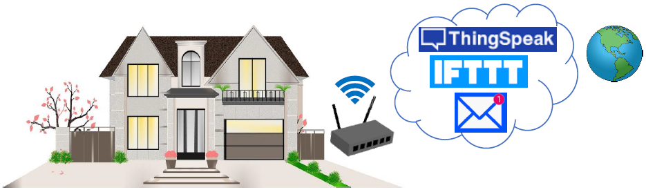
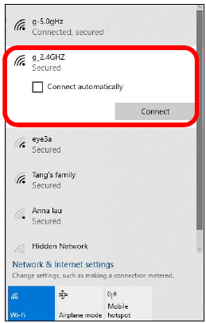
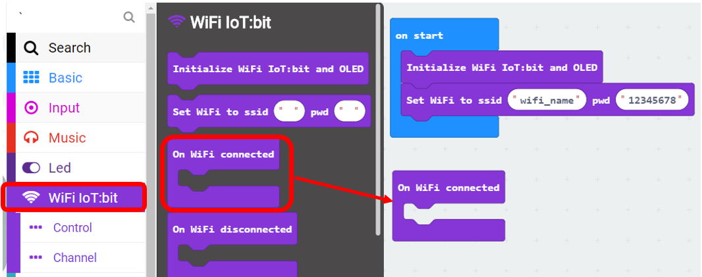
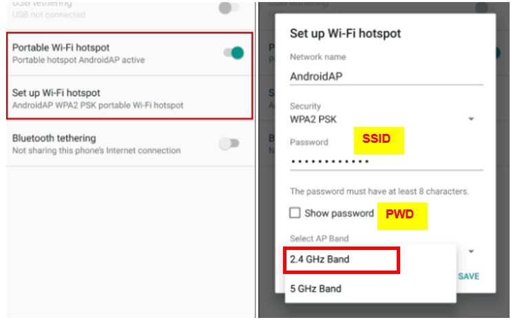
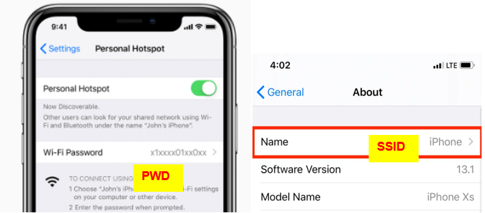
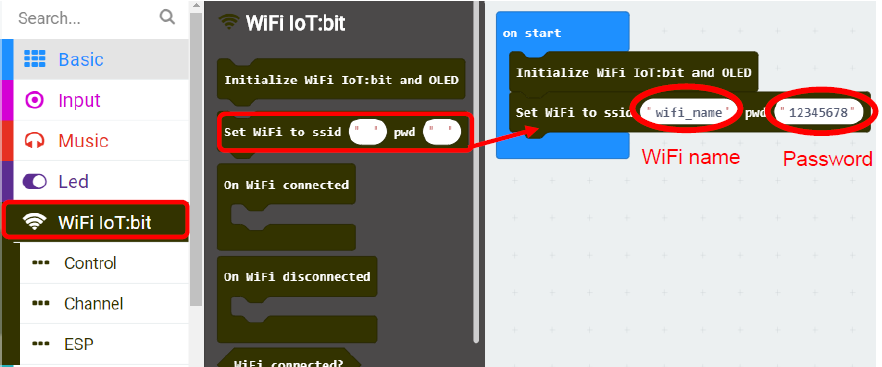

4. Chapter 1: Connect the micro:bit to the Wi-Fi¶
Connecting Wi-Fi is the very first step to access internet services, including ThingSpeak, IFTTT, email, etc. Before you start, make sure your micro:bit device is connected to the Internet.

4.1. Open the Home Router or Mobile Phone Hotspot¶
Before you start, you need to make sure there is a Wi-Fi signal (with 2.4GHz) available in your area.
You can either setup a home router or a Wi-Fi hotspot from your mobile phone.
4.1.1. Setup your home/office Wi-Fi¶

4.1.2. Setup your mobile phone Hotspot¶
* make sure your phone has internet service.

For android: 
For iPhone: 
4.2. Programming (Makecode)¶
Step 1
Before you start, you need to initialize the WiFi IoT:bit.
Choose WiFi IoT:bit -> Initialize WiFi IoT:bit and OLED

Step 2
After initializing, you can connect to the WiFi:
Choose WiFi IoT:bit -> Set Wi-Fi to ssid “”, pwd “”. Enter your Wi-Fi name and password

Step 3
“On WiFi connected” is an event handler.
It will be triggered once after connected with WiFi.

Step 4
Choose Basic -> show icon “heart” inside “On WiFi connected”

Full Solution
MakeCode: https://makecode.microbit.org/_Ydr63W8HdLDU
You could also download the program from the following website:
4.3. Result¶
Step 1
Load the program to the micro:bit and connect the micro:bit to WiFi IoT:bit.

Step 2
Wi-Fi IoT:bit will start to connect to internet, when the connection is successful, the IP Address would be shown.

Step 3
An icon “heart” will be shown on LED after WiFi is connected successfully.